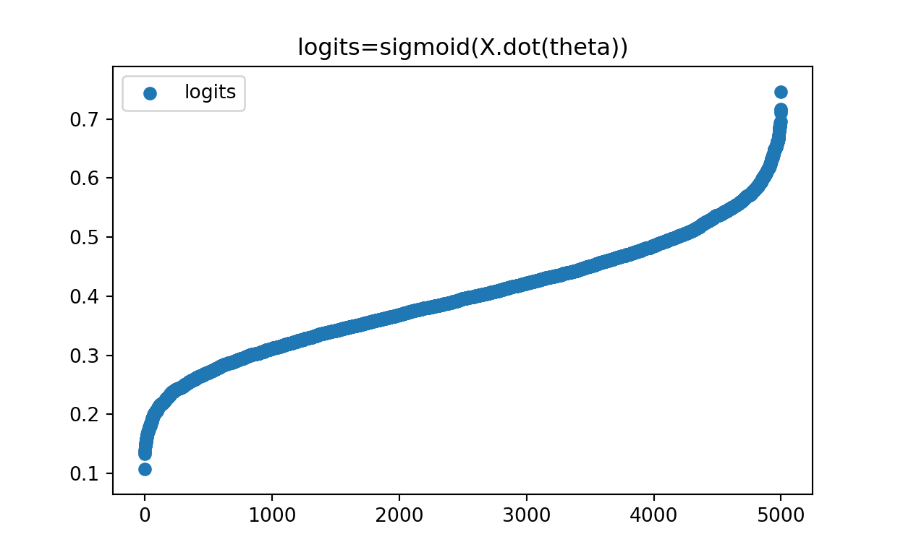
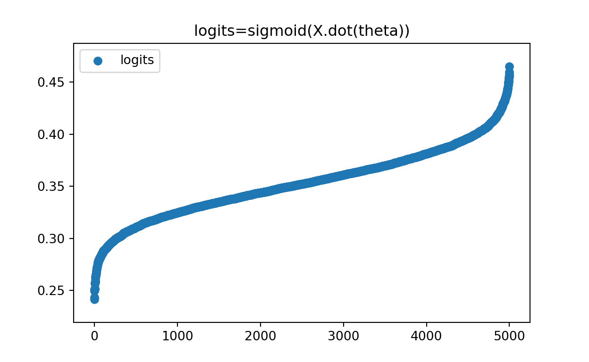
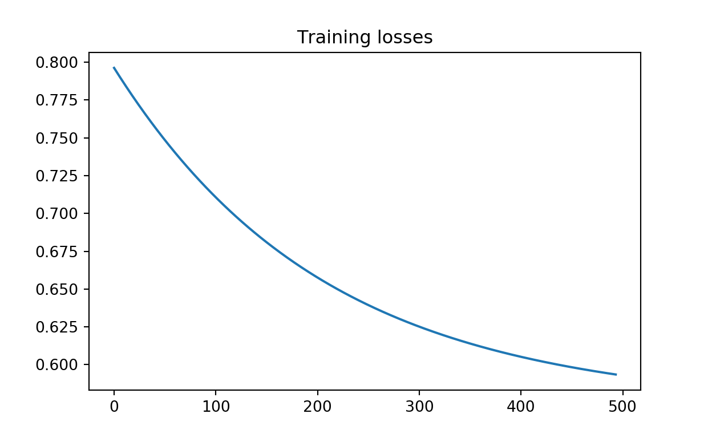
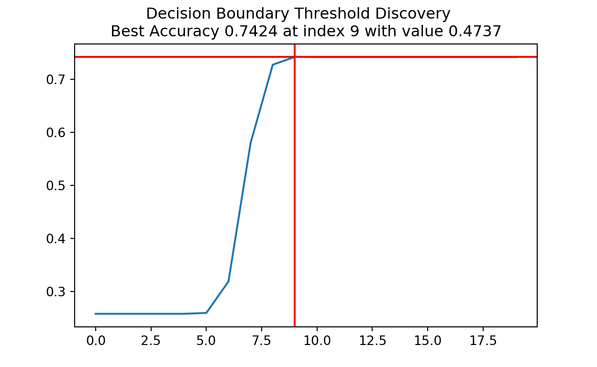

In this post we will walk through how to train a Logistic Regression model from scratch using Gradient Descent in Python.
One of the most simple machine learning problems is that of
binary classification. Further, one of the most simple
non-linear models is logistic regression. In short, this
model takes a set of parameters and seeks a linear combination mapped to
a non-linear sigmoid function which maximizes the
likelihood of fitting the data. The math for this is
below,
Sigmoid Function
\[ \sigma(z)=\frac{1}{1+exp(-z)} \] Maximum Likelihood Estimation
\[ L(x,y; \theta)=\frac{1}{n} \prod_{i=1}^n{\sigma(\theta^Tx)^{y_i} + (1-\sigma(\theta^Tx))^{1-y_i}} \] Negative Log Likelihood or Cross Entropy
\[ l(x,y; \theta)=-\frac{1}{n}\sum_{i=1}^n{{y_i}log(\sigma(\theta^Tx)) + (1-y_i)log(1-\sigma(\theta^Tx))} \] Gradient of Negative Log Likelihood
\[ \nabla_\theta l(x,y) = \frac{1}{n}\sum_{i=1}^n{x_i(\sigma(\theta^Tx)-y_i)} \]
Minimizing Negative Log Likelihood
\[ \theta^*=argmin(l(x,y; \theta) : \: \theta \in \Re^{d+1} ) \] ## The Data
We will start with some libraries and the simple data set we will be working with for binary classification.
import numpy as np
import matplotlib.pyplot as plt
X,y = np.concatenate((np.random.randn(5000, 2), np.ones(5000).reshape(-1,1)), 1), np.random.binomial(1, 0.25, size=5000)
N, D = X.shape
X.shape, y.shape((5000, 3), (5000,))Next, we will look at the sigmoid curve.
def sigmoid(z):
return 1/(1 + np.exp(-z))
theta_init = np.random.randn(3)
theta_initarray([-0.43382384, 0.00477304, -0.42501194])logits = sigmoid(X.dot(theta_init))
logitsarray([0.40473019, 0.51544891, 0.53547371, ..., 0.33712169, 0.40979105,
0.28786013])def plot_logits(logits, title = "logits=sigmoid(X.dot(theta))"):
plt.scatter(range(len(logits)), sorted(logits), label = "logits")
plt.legend()
plt.title(title)
plt.show()
plt.clf()
plot_logits(logits)
Next, the log likelihood.
def negative_log_likelihood(logits, y):
errors = y * np.log(logits) + (1-y)*np.log(1-logits)
N = len(errors)
return -(1/N) * np.sum(errors)
loss = negative_log_likelihood(logits, y)
loss0.634010228209429Finally, the gradient of the log likelihood. Notice that the gradient is always a vector.
def gradient_log_likelihood(X, logits, y):
N, D = X.shape
grad_vec = (1/N)*X.T.dot(logits-y)
return grad_vec
gradient_log_likelihood(X, logits, y)array([-0.09878357, 0.00720683, 0.14126207])Now we want to optimize. so we will build a gradient descent function to loop through our training set and converge on a solution. We will also take a moment to visualize the logits.
def gradient_descent(f, grad_f, eps=0.01, eta=0.1, max_iter = 1000, **kwargs):
theta_init = np.random.randn(D)
thetas = [theta_init]
losses = []
for t in range(1,max_iter):
logits = kwargs["h"](kwargs["X"].dot(thetas[-1]))
loss = f(logits, kwargs["y"])
losses.append(loss)
#if t % 50 == 0:
# print("Loss {}".format(losses[-1]))
#plot_logits(logits)
#input("...")
grad_vec = grad_f(kwargs["X"], logits, kwargs["y"])
theta_t = thetas[t-1] - eta * grad_vec
thetas.append(theta_t)
if np.sqrt(np.sum(np.square(thetas[-2] - thetas[-1]))) <= eps:
return thetas[-1], losses
break
return None
final_theta, losses = gradient_descent(negative_log_likelihood,
gradient_log_likelihood,
eps = 0.001,
eta=0.01,
max_iter = 100000,
X=X,
h=sigmoid,
y=y)
logits = sigmoid(X.dot(final_theta))
plt.clf()
plot_logits(logits)
plt.clf()
plt.plot(losses)
plt.title("Training losses")
plt.show()
The initial training accuracy with null parameters is below. 49% with a random guess on theta at the start.
def predict(logits, threshold = 0.5):
return (logits > threshold).astype(int)
logits = sigmoid(X.dot(theta_init))
y_pred = predict(logits, threshold = 0.5)
print("Accuracy: {}".format(np.mean(y_pred == y)))Accuracy: 0.666After some training, our final theta parameters now get 73%. Not too shabby!
def predict(logits, threshold = 0.5):
return (logits > threshold).astype(int)
logits = sigmoid(X.dot(final_theta))
y_pred = predict(logits, threshold = 0.5)
print("Accuracy: {}".format(np.mean(y_pred == y)))Accuracy: 0.742Lets try this on some test data. We will just generate some more and see how we do! It looks like we get about the same percentage on new data, so that is a good indicator. We would expect this though, since they are sampled directly from the signal population. One good study might be to examine which data points are incorrect and where they fall on the logistic curve. Were they really low values or really high? Perhaps they were right on the decision boundary and just couldnt decide. All these and others are good questions for a deep dive into model interpretation, which we will not get into now.
Xtest,ytest = np.concatenate((np.random.randn(5000, 2), np.ones(5000).reshape(-1,1)), 1), np.random.binomial(1, 0.25, size=5000)
logits = sigmoid(Xtest.dot(final_theta))
y_pred = predict(logits, threshold = 0.5)
print("Test Accuracy: {}".format(np.mean(y_pred == ytest)))Test Accuracy: 0.7614Right now the decision boundary is 0.5 which is
customary in the machine learning and statistical community. We will
explore what cutoff might be optimal by doing a
random search through a bunch of possibilities from
0 to 1. The decision boundary that eeked out some extra
performance for us is at around 0.68, or for the other
engineers in the room, about 0.7. This tells us that there
is about a 70% likelihood of predicting a 0
class label and about 30% likelihood of predicting a
1. This is very interesting because our original data was
sampled from a binomial distribution with a probability of success as
25%. So the model, without being told, trained on a random
parameter vector, after applying gradient descent, and through a bit of
search optimization, was able to arrive at an estimate on the
populations yes prediction likelihood. Optimization is
pretty amazing!
def optimize_decision_boundary(logits, y, plot = False):
results = []
thresholds = []
for thresh in np.linspace(0, 1, 20):
y_pred = predict(logits, threshold = thresh)
results.append(np.mean(y_pred == y))
thresholds.append(thresh)
thresh_star = np.argmax(results)
if plot:
plt.plot(results)
plt.suptitle("Decision Boundary Threshold Discovery")
plt.title("Best Accuracy {} at index {} with value {}".format(results[thresh_star], thresh_star, np.round(thresholds[thresh_star], 4)))
plt.axvline(x = thresh_star, c='r')
plt.axhline(y = results[thresh_star], c='r')
plt.show()
return thresh_star, thresholds[thresh_star]
plt.clf()
threshold = optimize_decision_boundary(logits, y, plot=True)
threshold(9, 0.47368421052631576)